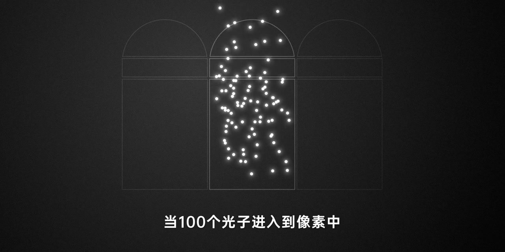
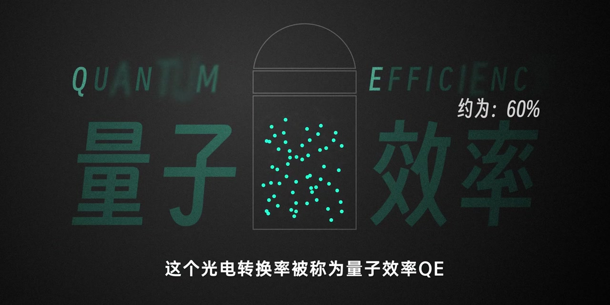
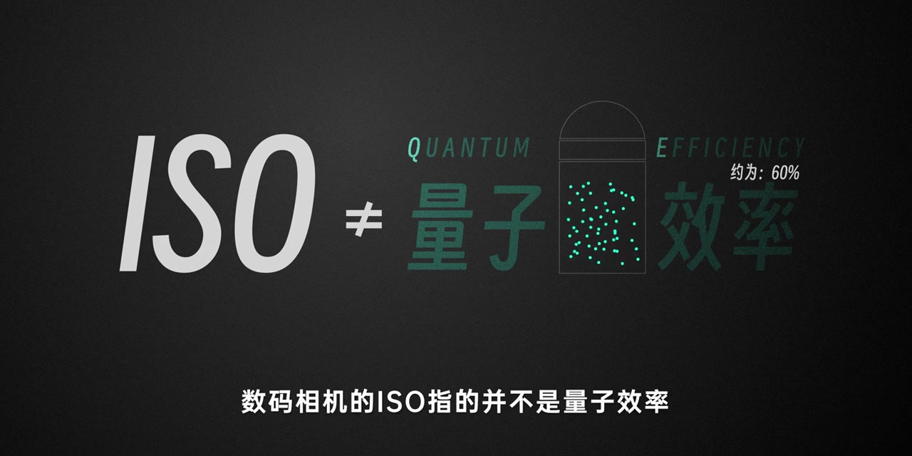
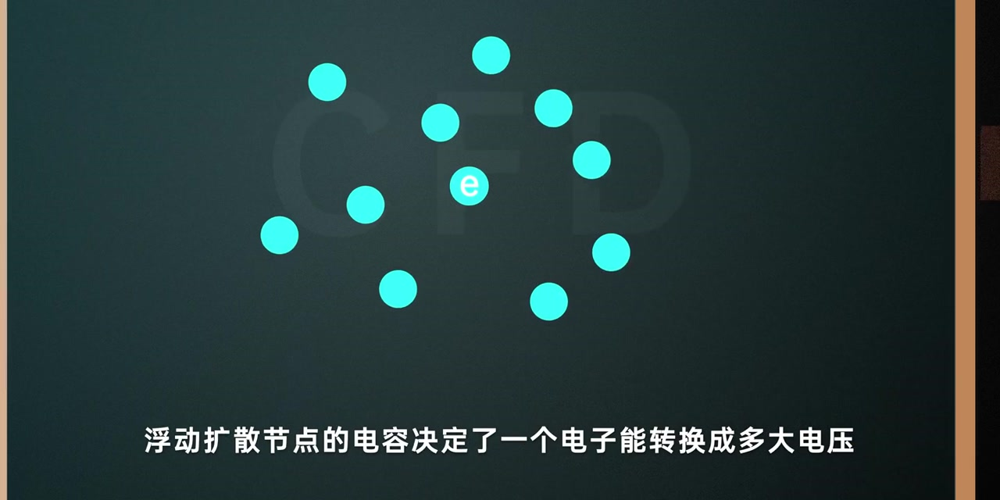
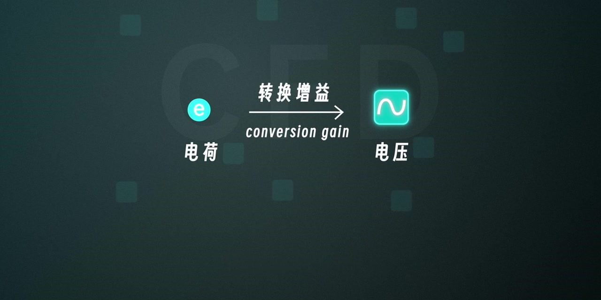
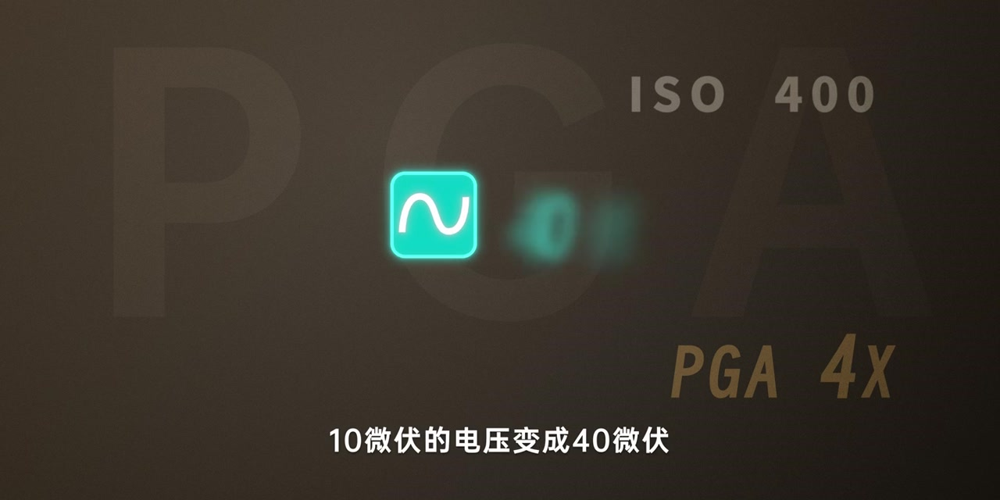
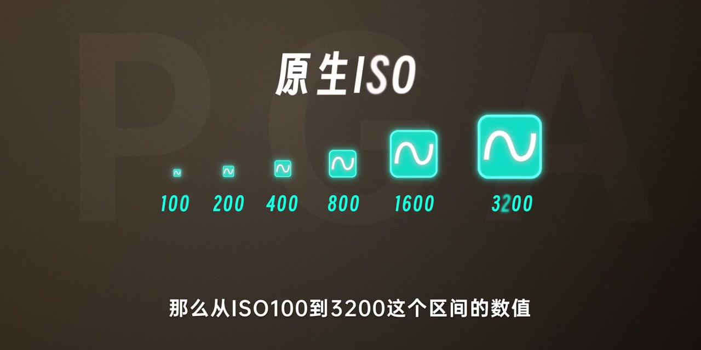
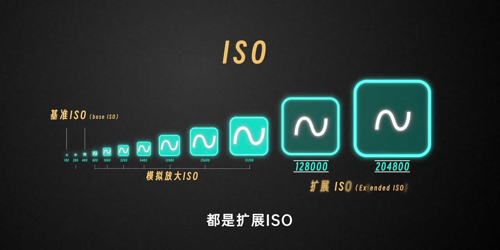

开场：100 个光子进像素，大约一半变电子
深灰底上，三个像素轮廓并排，中间像素里落满发光的「光子」。旁白先给数量感：当 100 个光子进入像素，大概有 50–60 个能被转换成电子。这个光电转换率叫量子效率 QE；画面右上还写着「约为：60%」。
画面字幕：「这个光电转换率被称为量子效率QE」
说明：Whisper 常把「微伏」识成「微幅」，「浮动扩散节点」识成「不弄扩散节点」，「Base ISO」识成「BassISO」，「Native ISO」识成「NATCHYISO」，「A7M4」识成「ACM4」，「51,200」识成「51100」，「体现在」识成「提现在」，「主要指的是」识成「主要品牌的」。下文叙述以可见字幕与动画为准；页面末尾仍完整保留全部 Whisper 分段。


关键纠偏：改 ISO 不能改量子效率
旁白自问自答：改变 ISO 能不能改变这个量子效率？答案是不能。每台相机的量子效率是固定的，不会随 ISO 切换改变。画面打出大字对照：ISO ≠ QUANTUM EFFICIENCY / 量子效率。
旁白：「数码相机的ISO指的并不是量子效率这个感光度」

电路视角：电荷到电压的转换增益 = Base ISO
镜头切到电路层。旁白说 ISO 首先体现在电荷到电压的转换上：浮动扩散节点的电容，决定了一个电子能转换成多大电压，单位通常是微伏每电子。电荷→电压的对应关系叫转换增益（conversion gain）；而这就是常说的 Base ISO，也叫基准 ISO 或基础 ISO。
画面字幕：「浮动扩散节点的电容决定了一个电子能转换成多大电压」


调 ISO 改的是什么：PGA 把电压信号放大
旁白收束到操作层：调整 ISO 改变的其实是电压信号强度，靠 PGA（可编程增益放大器）做模拟放大。假设基准 ISO 100 时，一个电子对应 10 微伏；ISO 200 就是 PGA 两倍放大到 20 微伏；ISO 400 就是 PGA 4 倍，10 微伏变成 40 微伏，以此类推。
画面字幕：「10微伏的电压变成40微伏」

原生 ISO：模拟放大能覆盖的区间
PGA 倍率有上限。以 32 倍为例，对应 ISO 3200；于是从 ISO 100 到 3200 这段，都可以称为原生 ISO。画面用从小到大的信号方块标出 100→200→400→800→1600→3200。旁白补充：技术进步后很多相机原生范围更大，例如 A7M4 从 ISO 100 到 51,200。

争议：是不是只有基准 ISO 才叫「原生」
旁白承认常见疑惑：有人认为只有基准 ISO 100 才是原生，其他都是非原生。这存在诸多争议，也没有绝对严谨的说法。但从 Native ISO 的一种定义看——不经数字放大，用基准 ISO 乘以 PGA 模拟放大得到的数值——这些都可以叫原生 ISO；差别只是有的是基准 ISO，有的是模拟放大 ISO。画面还引用 Imaging Resource 对 Sony A7 IV 的「Native ISO: 100 – 51,200」规格页做旁证。
旁白：「它指的是不经数字放大，用基准ISO乘以PGA模拟放大得到的数值」
超出模拟区间：扩展 ISO ≈ 机内数字提亮
超出 PGA 模拟区间的数值，都是扩展 ISO：ADC 量化之后再在机内做数字放大，跟后期提亮画面没有本质差别。画面把基准 ISO、模拟放大 ISO 与扩展 ISO（如 128000、204800）排成一条增益阶梯。

收束：数码 ISO 更贴切的名字叫「增益」
旁白收尾：在数码时代，把 ISO 理解成「传感器对光线的敏感度」并不太贴切。ISO 主要指电荷到电压的转换，以及之后 PGA 参与的模拟放大；也可以把 ISO 看作这一段电路共同协作的电信号读出——当然，它还有另一个名字：增益。
旁白：「也可以把ISO看作是这一段电路共同协作的电信号读出……增益」
画面同期给出读出链路：TX 传输门 → FD 浮动扩散节点 / 电容 → SF 源极跟随器 → PGA 模拟放大（标注 ISO）→ ADC 模数转换器。